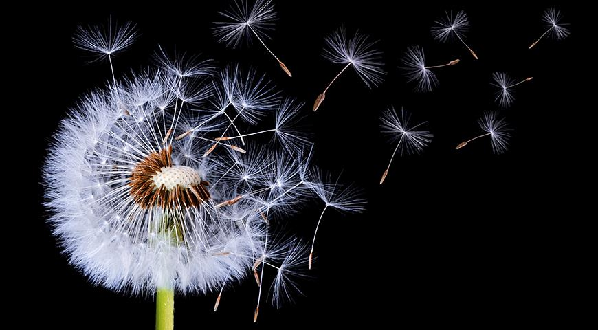

Одуванчик полевой, лекарственный!
Одуванчик - наверное, самый популярный сорняк, если не во всем мире, то, по крайней мере в средней полосе.
Его очень любят дети и страшно не любят взрослые. Хотя и они радуются ярким весенним желтым цветам, которые
растут не у них в огороде, или на газоне, а в парке или на лугу.

Самый известный вид рода - одуванчик лекарственный, также известный как полевой, аптечный, или обыкновенный.
По латыне - Taraxacum officinale. Род принадлежит семейству Астровых и широко распространен по всему миру.
Откуда пошло название одуванчик?
Источник латинского названи ярода - Taraxacum не до конца понятен и есть несколько мнений. Например,
возможно слово происходит от греческого taraxis, что значит воспаление, или воспламенение и akeomai,
т.е. я излечиваю. Возможно, от другого греческого слова – tarassein, что значит успокаивать. Есть и
другие варианты происхождения.
С видовым же названием все просто: officinalis - целебный, аптечный, officina — мастерская, или аптека.
В любом случае, как не переводи, все одно – одуванчик – лечебный и успокаивающий).
Русское же название идет от славянского глагола одуть и суффикса –чик, что связано с легкостью, с которой
семена отрываются от цветоложа и улетают по ветру.

Народные названия одуванчика
Народные названия имеют два источника происхождения
- Первая группа названия связана с тем, что голое цветоложе, которое остается после того как улетят семена, напоминает
плешивую голову. Это варианты: европейское - Caput monachi - монашеская голова, русские - пустодуй, пушник, плешивец,
еврейская шапка, пухлянка.
-
Вторая группа названия связана с наличием у растения млечного сока, и это — молокоед, молочник, подойничек.
Описание одуванчика
Одуванчик – это растение с розеткой прикорневых голых, зубчатых листьев, длиной 10—25 см. Цветет одуванчик крупными желтыми
цветами - соцветиями-корзинками. Цветоложе – «плешивая голова» - голое, плоское, ямчатое.
Цветоносная стрелка сочная и внутри полая. Плод одуванчика — серовато-бурая веретенообразная семянка с хохолком, которые легко
отрываются от цветоложа и разносятся ветром по всему огороду, т.е. миру.
И, что ОЧЕНЬ важно: ВСЕ части растения содержат густой белый горький млечный сок.
10 интересных фактов об одуванчиках
-
Одуванчик лекарственный — одно из самых распространенных растений в мире. Математики подсчитали, что если бы все
семена прорастали, то их воздушный десант быстро захватил бы всю землю. Всего через 10 поколений одуванчикам
понадобилась бы площадь, в пятнадцать раз превышающая поверхность земного шара.
-
На участке избавиться от одуванчиков ОЧЕНЬ сложно: из кусочка корешка размером в полсантиметра вырастает полноценное
растение. С этим связаны тысяча и один способ по уничтожению злостного и симпатичного врага на участке.
-
Цветы одуванчики – это природные часы: около шести утра (в средней полосе России) цветы раскрываются, в три часа дня -
закрываются.
-
Зелень одуванчика – превосходный источник витаминов, железа, кальция и фосфора. В них много протеина, то есть они еще
и очень питательны.
-
В Китае, Западной Европе и Америке одуванчики давно используют в пищу.
-
Из поджаренных корней обыкновенного одуванчика делают напиток, который может частично заменить кофе.
-
В Италии можно найти блюда из одуванчиков даже в меню ресторанов, настолько они популярны.
-
Одуванчики бывают не только желтые! На лугах и каменистых склонах Кавказа растет одуванчик пурпуровый, или
пурпуровоцветковый, Taraxacum porphyranthum. Как видно из названия это одуванчик с сиреново-розовыми цветами. А в
Мурманской области растет редкий белоцветковый одуванчик - Одуванчик белоязычковый, или турьемысский, Taraxacum
leucoglossum. Этот вид настолько редок, что занесен в Красную книгу.
-
День одуванчика (World Dandelion Day) отмечается 13 мая.
-
Традиционно одуванчики цветут в мае-июне, но все чаще в последние годы встречается повторное осеннее цветение. Этакий
весенний привет вам, небольшое напоминание, что весна наступит быстрее, чем вам кажется.
Все данные взяты из этого источника знаний по причине ограниченной фантазии и недостатка контента в голове
Источник знаний
исключительно в учебных целях.